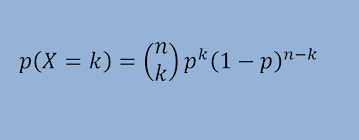
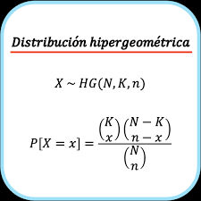
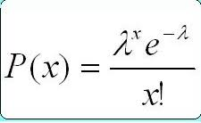
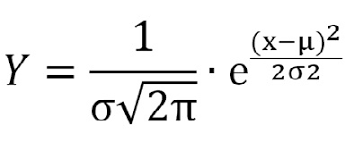
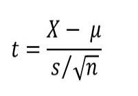

1.1 Conceptos básicos de estadística:
Población: En estadística, se refiere al conjunto total de elementos (individuos, objetos, eventos) que se investigan. Los parámetros poblacionales son valores numéricos que describen características de dicha población, como la media o la varianza. Un censo recoge datos de todos los miembros de la población, mientras que una muestra es un subconjunto representativo que se utiliza para hacer inferencias sobre toda la población. Las poblaciones pueden ser finitas (con un número limitado de elementos) o infinitas (con un número ilimitado de elementos). Comprender la población es crucial para definir el alcance del estudio y realizar inferencias precisas.
Muestra aleatoria: es un grupo de individuos seleccionados de una población de manera que cada uno tenga la misma posibilidad de ser escogido, asegurando así su representatividad. Existen varios tipos de muestra aleatoria, como la selección equitativa de todos los miembros (simple), la división en subgrupos para seleccionar dentro de cada uno (estratificada), la selección de cada k-ésimo individuo (sistemática), y la selección de grupos enteros (por conglomerados). Estas muestras minimizan el sesgo en la selección y facilitan hacer inferencias precisas sobre la población, aunque su implementación puede presentar desafíos logísticos y económicos.
Parámetros aleatorios: En estadística, usualmente nos referimos a parámetros como valores estáticos que caracterizan una población o una distribución de datos. Por ejemplo, la media y la desviación estándar son parámetros que describen una distribución normal. En ciertos contextos, especialmente en modelos probabilísticos o simulaciones, los parámetros pueden ser tratados como variables que varían según distribuciones de probabilidad. Estos "parámetros variables" o "parámetros probabilísticos" permiten modelar situaciones donde la incertidumbre o la variabilidad son factores importantes.
1.2 Descripción de datos:
Datos agrupados y no agrupados: En estadística, se diferencia entre datos clasificados y no clasificados. Los datos no clasificados son observaciones individuales sin agrupar en categorías o intervalos específicos, como una lista de edades individuales. Por otro lado, los datos clasificados son aquellos organizados en grupos o intervalos para resumir la información. Por ejemplo, en lugar de edades individuales, podríamos tener rangos como 0-10 años, 11-20 años, etc. Esto simplifica el manejo y análisis de grandes conjuntos de datos. Esta distinción es esencial para el análisis y la representación de datos, afectando los métodos y técnicas estadísticas utilizadas.
Frecuencias de clase: La frecuencia es el conteo o la proporción de datos que caen dentro de un intervalo específico en una distribución estadística agrupada o un histograma construido a partir de ella.
Frecuencia relativa: La frecuencia relativa es una noción estadística que se refiere a la proporción o el porcentaje de ocasiones en que ocurre un evento específico en comparación con el total de observaciones o datos en un conjunto.
Punto medio: Es el valor central de un conjunto de datos. Para un conjunto de datos con un número impar de elementos, es el elemento que tiene tantos valores por debajo como por encima de él. Para un conjunto de datos con un número par de elementos, es el promedio de los dos valores centrales del conjunto de datos. El punto medio se emplea en estadísticas para analizar un conjunto de datos.
Limites: Son aquellas entidades numéricas empleadas para indicar la posición que ocupa un dato específico en relación con el resto de los datos numéricos, permitiendo así identificar otros puntos característicos de la distribución de datos que no son inherentes a los valores centrales.
1.3 Medidas de tendencia central
Media aritmética: La media aritmética es el valor obtenido al sumar todos los datos y dividir el resultado entre el número total de datos. Denotamos la media con el símbolo X y la calculamos de la siguiente manera
X y la calculamos de la siguiente manera:
̅X = (1/N) Σi=1N Xi
Media geometrica: La media geométrica es un método para calcular el promedio de varios números positivos, especialmente útil cuando esos números representan tasas de crecimiento o porcentajes. Se calcula multiplicando todos los números y luego obteniendo la raíz n-ésima del producto total, proporcionando así un promedio que refleja de manera más precisa los cambios proporcionales.
Media ponderada: es una medida de centralización que asigna diferentes importancias a cada uno de los valores sobre los cuales se calcula la media. En una media ponderada, cada valor se multiplica por un peso específico, y el resultado total se divide por la suma de los pesos.
Mediana: Es el número de en medio; se encuentra al ordenar todos los puntos de datos y elegir el que está en medio
Moda: es el numero que se repite mas veces
Medidas de dispersion: Los indicadores de dispersión muestran cómo están distribuidos los valores de la variable en relación con una medida central, proporcionando también una noción de cuán representativa puede ser esta medida central como resumen general de la variable.
Varianza: Mide que tan separados estan los datos alrededor de la media
Desviación estandar: Es una medida que indica cuánto varían los datos respecto a la media. Se utiliza para evaluar la dispersión o la variabilidad en un conjunto de datos, siendo fundamental en estadística para comprender la distribución de los valores en relación con su media.
Desviación media: La desviación media se calcula como la media de las diferencias absolutas entre cada valor y la media del conjunto de datos. Esto nos da una idea de la dispersión promedio de los datos con respecto a su media.
Desviación mediana: Se determina calculando la mediana de las diferencias absolutas entre cada valor del conjunto de datos y la mediana de ese conjunto.
Rango: Indica la diferencia entre el valor máximo y mínimo en un conjunto de datos. Se utiliza para entender la extensión total de los valores observados en una distribución.
1.3 Medidas de tendencia central: La media representa el valor en el medio del conjunto de datos. Los principales valores numéricos de las tendencias promedio son la media, la mediana y la moda. Estos valores nos ayudan a comprender dónde se centran los datos en torno a su media.
1.4 Parámetros para datos agrupados: Para datos grupales, los parámetros más utilizados son peso, media, moda, variación y desviación estándar. Se resume la naturaleza de la recopilación y distribución de datos. El promedio ponderado se calcula multiplicando cada valor por su frecuencia y dividiendo por el número de observaciones. La mediana es el centro del grupo, la media es la desviación estándar y la variación es la desviación estándar, que se utiliza para medir la distribución de los datos dentro del grupo.
1.5 Distribución de frecuencias: La distribución de frecuencia es una técnica utilizada en estadística para organizar y resumir datos, mostrando con qué frecuencia ocurre cada valor en un conjunto de datos. Implica dividir los datos en categorías o regiones y contar el número de observaciones que pertenecen a cada categoría.
1.6 Técnicas de agrupación de datos: Las técnicas de agrupación de datos son métodos utilizados en estadística y aprendizaje automático para clasificar un conjunto de datos en grupos o clústeres con características similares. Estas técnicas son útiles para encontrar patrones ocultos en los datos y para hacer análisis exploratorio de los mismos.
1.7 Técnicas de muestreo: Las técnicas de muestreo son métodos utilizados para seleccionar una muestra representativa de una población más grande con el fin de realizar inferencias sobre la población completa. Estas técnicas son esenciales en estadística y en diversos campos de investigación para evitar sesgos y garantizar la validez de los resultados.
2.1 Técnicas de Conteo: Las técnicas de conteo son una serie de métodos de probabilidad para contar el número posible de arreglos dentro de un conjunto o varios conjuntos de objetos. Estas se usan cuando realizar las cuentas de forma manual se convierte en algo complicado debido a la gran cantidad de objetos y/o variables.
2.1.1 Principio aditivo: El principio aditivo es una técnica básica en combinatoria que permite contar el número total de opciones al sumar las distintas alternativas disponibles. Se aplica cuando tienes conjuntos de opciones exclusivas entre sí y simplemente sumas el número de opciones en cada conjunto para obtener el total combinado.
2.1.2 Principio multiplicativo: El principio multiplicativo en combinatoria se usa cuando una tarea se divide en etapas sucesivas y cada etapa ofrece varias opciones. En lugar de sumar las opciones como en el principio aditivo, aquí se multiplican las opciones en cada etapa para determinar el total de combinaciones posibles.
2.1.3 Notación Factorial: La notación factorial, representada por un signo de exclamación (!), se usa en combinatoria para expresar el producto de todos los enteros positivos hasta un número dado. Por ejemplo, 5! se calcula como 5 × 4 × 3 × 2 × 1, que es igual a 120. Esta notación es esencial para determinar el número de permutaciones y combinaciones posibles de conjuntos de elementos.
2.1.4 Permutaciones: Las permutaciones son disposiciones ordenadas donde el orden de los elementos es crucial. En combinatoria, se emplean para contar las diferentes maneras en que se pueden ordenar elementos únicos. Por ejemplo, si tienes los elementos A, B y C, las permutaciones posibles son ABC, ACB, BAC, BCA, CAB y CBA. La fórmula básica para calcular el número de permutaciones de \( n \) elementos distintos es \( P(n) = n! \), donde \( n! \) representa el factorial de \( n \).
2.1.5 Combinaciones: Las combinaciones son grupos donde el orden de los elementos no afecta, solo importa la selección en sí. En combinatoria, se usan para contar la cantidad de subconjuntos que pueden formarse a partir de un conjunto dado de elementos. Por ejemplo, si tienes los elementos A, B y C, las combinaciones posibles incluyen ABC, así como también ACB, BAC y BCA, entre otras. La fórmula para calcular el número de combinaciones de n elementos tomados k a la vez se expresa como:
La fórmula para calcular el número de combinaciones de n elementos tomados de k en k es:
$$ C(n, k) = \binom{n}{k} = \frac{n!}{k!(n-k)!} $$
Esta fórmula asegura que no se cuenten las mismas selecciones más de una vez y considera todos los posibles subgrupos.
2.1.6 Diagrama de Árbol: El diagrama de árbol es una representación gráfica útil en combinatoria y probabilidad. Se emplea para visualizar de manera estructurada las diferentes opciones y resultados que pueden surgir de una serie de decisiones o eventos sucesivos. Este método es particularmente eficaz cuando existen varias etapas o decisiones secuenciales que influyen en el resultado final Por ejemplo, al lanzar dos monedas, un diagrama de árbol muestra de forma clara las ramificaciones para cada posible resultado en el primer lanzamiento, seguido de las ramas correspondientes a cada resultado posible en el segundo lanzamiento. Es una herramienta efectiva para organizar y calcular el número total de resultados posibles en problemas complejos de conteo y probabilidad.
2.1.7 Teorema del Binomio: El Teorema del Binomio es un principio esencial en álgebra que describe cómo se expande una potencia de un binomio. En términos simples, permite calcular la suma de potencias de dos términos, como \( (a + b)^n \), donde \( a \) y \( b \) son números o variables, y \( n \) es un entero positivo.
La fórmula general del Teorema del Binomio es:
$$ (a + b)^n = \sum_{k=0}^{n} \binom{n}{k} a^{n-k} b^k $$
Aquí, \( \binom{n}{k} \) representa el coeficiente binomial, calculado como \( \binom{n}{k} = \frac{n!}{k!(n-k)!} \).
Este teorema tiene aplicaciones fundamentales en matemáticas y se utiliza en áreas como la teoría de probabilidades, combinatoria y cálculo, entre otros campos.2.2 Teoría elemental de probabilidad: La teoría básica de la probabilidad se centra en el estudio de eventos aleatorios y la evaluación numérica de su ocurrencia. Incluye conceptos como el conjunto total de posibles resultados (llamado espacio muestral), los eventos (que son subconjuntos del espacio muestral), y reglas para calcular probabilidades. Estas reglas incluyen cómo sumar probabilidades para eventos que no pueden ocurrir simultáneamente y cómo multiplicar probabilidades para eventos que son independientes entre sí. La teoría de la probabilidad es esencial para analizar y predecir resultados en una variedad de situaciones, desde juegos hasta aplicaciones científicas y financieras.
2.3 Probabilidad de Eventos
Definición de espacio muestral: Se entiende el grupo de todos los resultados especificos que se pueden obtener tras una experimentacion de caracter aleatorio. A cada uno de sus componentes se les define como puntos muestrales o simplemente muestras.
Definición de evento: En probabilidad, un evento es simplemente un resultado posible de un experimento aleatorio. Es cualquier resultado o combinación de resultados que pueda ocurrir cuando realizas el experimento. Por ejemplo, al lanzar un dado, obtener un número par o mayor que 4 son ejemplos de eventos posibles.
Simbologia:
Unión: La unión de dos conjuntos se define como la combinación de elementos de ambos conjuntos. El diagrama que se muestra a continuación ilustra esta situación descrita anteriormente.
Intersección: La intersección de dos conjuntos se define como la parte común que comparten ambos conjuntos, en caso de que exista. Por ejemplo, no existe intersección entre los números pares y los impares. El diagrama a continuación ilustra esta situación.
Diagramas de Venn: Los Diagramas de Venn se utilizan principalmente para representar conjuntos matemáticos mediante circunferencias. Estas figuras permiten a los estudiantes realizar operaciones como la unión, la intersección, entre otras. Podríamos decir que el manejo de los Diagramas de Venn sirve para guiar al estudiante, constituyendo una herramienta metodológica que los profesores utilizan para explicar la Teoría de Conjuntos.
2.4 Probabilidad con Técnicas de Conteo
Axiomas:Claro, aquí tienes un resumen más conciso de los axiomas fundamentales de la teoría de probabilidades:
Teorema de la Probabilidad Total:
$$ P(A) = \sum_{i} P(A \cap B_i) = \sum_{i} P(A \mid B_i) P(B_i) $$
Donde \( \{B_i\} \) es una partición del espacio muestral.
Teorema de Bayes:
$$ P(A \mid B) = \frac{P(B \mid A) P(A)}{P(B)} $$
Donde \( P(B) \) es la probabilidad del evento \( B \).
Teorema de la Ley de los Grandes Números:
$$ \bar{X}_n \xrightarrow{\text{c.s.}} \mu \quad \text{o} \quad \bar{X}_n \xrightarrow{P} \mu $$
Donde \( \bar{X}_n \) es la media de \( n \) observaciones, \( \mu \) es la esperanza de la variable aleatoria, y \( \xrightarrow{\text{c.s.}} \) y \( \xrightarrow{P} \) indican convergencia casi segura y convergencia en probabilidad, respectivamente.
2.5 Probabilidad condicional
Dependiente: Dos eventos están relacionados si el resultado del primero influye en el resultado del segundo, lo que altera la probabilidad. Por ejemplo, si la primera canica no se reemplaza, el conjunto de posibles resultados para el segundo evento se modifica, estableciendo una dependencia entre los eventos. La probabilidad de que ambos eventos ocurran es el producto de las probabilidades individuales de cada uno: P(A y B) = P(A)*P(B)
Independientes: Dos eventos son independientes si el resultado del segundo evento no se ve influenciado por el resultado del primero. Si A y B son eventos independientes, entonces la probabilidad de que ambos ocurran es igual al producto de sus probabilidades individuales. P(A y B) = P(A) * P(B)
2.6 Ley multiplicativa: La regla de la multiplicacion permite encontrar la probabilidad de que ocurra el evento A y el evento B al mismo tiempo. Esta regla depende de si los eventos son dependientes o independientes.
2.7 Eventos independientes:
Regla de Bayes: En eventos independientes, la Regla de Bayes establece que la probabilidad de que ocurran dos eventos A y B simultáneamente es el producto de sus probabilidades individuales: P(A n B) = P(A) * P(B) Esto implica que la probabilidad condicional de A dado B, P(A∣B), en eventos independientes es simplemente la probabilidad de A, P(A), porque la ocurrencia de B no afecta la probabilidad de A. Espero que este resumen sea útil y claro. Si tienes más preguntas o necesitas más detalles, estoy aquí para ayudar.
3.1 Variables aleatorias discretas: Una variable aleatoria es una funci ́on que asigna un nu ́mero a cada suceso elemental de un experimento aleatorio. Una Variable discreta solo puede tomar valores num ́ericos aislados (fijados dos con- secutivos, no puede existir ninguno intermedio).
Variables aleatorias discretas3.1.1 Distribución de probabilidad en forma general: Una distribución de probabilidad asigna a cada evento posible de un espacio muestral un número entre 0 y 1, que representa la probabilidad de que ese evento ocurra. La suma de todas las probabilidades de los eventos posibles es igual a 1.
3.1.2 Valor esperado: Es una medida de centralidad en una distribución de probabilidad que representa el promedio ponderado de los posibles valores de una variable aleatoria. Se denota generalmente como E[X] o μ.
3.1.3 Variancia: La varianza es una medida estadística que indica la dispersión de los valores de una variable aleatoria respecto a su valor esperado o media. Es una medida cuantitativa de la variabilidad o dispersión de los datos en una distribución de probabilidad.
Desviación estándar: La desviación estándar es otra medida estadística de dispersión que se utiliza comúnmente junto con la varianza para describir la variabilidad de una variable aleatoria.
3.1.4 Función acumulada: es una función importante en la teoría de probabilidad que describe la probabilidad acumulada de que una variable aleatoria X sea menor o igual a un cierto valor x.
3.2 Variables aleatorias continuas: Se dice que una variable aleatoria X es continua si su conjunto de posibles valores es todo un intervalo (finito o infinito) de números reales.
Variables aleatorias continuas3.2.1 Distribución de probabilidad en forma general: Las distribuciones de probabilidad de variable continua son idealizaciones de las distribuciones estadísticas de variable continua. Estas se obtienen empíricamente (experimentando u observando). Aquellas son distribuciones teóricas. Las distribuciones de probabilidad de variable continua se definen por medio de una función y = f(x) que se llama función de probabilidad o función de densidad. Ha de ser f(x) 0 para todo x. Las probabilidades vienen dadas por el área bajo la curva. Por tanto, el área encerrada bajo la totalidad de la curva es 1. Es decir, tomamos como unidad el área bajo la curva completa.
3.2.2 Valor esperado: El valor esperado (o esperanza matemática) de una variable aleatoria continua X se define de manera similar al caso discreto, pero utilizando integrales en lugar de sumas. Para una variable aleatoria continua con función de densidad de probabilidad f(x), el valor esperado E[X] se calcula como:
E[X] = ∫-∞∞ x ⋅ f(x) dx3.2.3 Variancia, desviación estándar: Es una medida de dispersión, se representa con σ2 o V(X). La varianza de una variable aleatoria continua X con función de densidad de probabilidad f(x) y valor medio μ está dada por:
Varianza: σ2 = V(X) = ∫-∞∞ (x - μ)2 ⋅ f(x) dx
ó
Varianza: σ2 = V(x) = ∫-∞∞ x2 ⋅ f(x) dx - μ2
Desviación estándar: Es medida de dispersión representada por σ y es la raíz cuadrada de la varianza.
Desviación estándar: σ = √σ2
3.2.4 Función acumulada: La función acumulada o función de distribución acumulada (CDF por sus siglas en inglés) para variables continuas se define como:
F(x) = P(X ≤ x)
donde X es una variable aleatoria continua y x es un valor específico. La función F(x) nos da la probabilidad de que la variable aleatoria X sea menor o igual a x.
3.2.5 Cálculos de probabilidad: La función de densidad de probabilidad de una variable aleatoria continua es una fórmula que ayuda a calcular la probabilidad de que una variable aleatoria continua tenga un valor que esté dentro de un intervalo específico. Como todavía no se entiende mucho, veamos los detalles y los ejercicios resueltos.
4.1 Función de probabilidad: Esta funcion devuelve la pribabilidad de que una variable aleatoria discreta sea identico a un valor, esta funcion asocia a cada punto de un espacio muestral X la probabilidad de que esta lo asuma.
4.2 Distribución binomial: La distribucion binomial calcula las probabilidades de cualquier proceso binomial, el proceso binomial frecuentemente es llamado proceso de Bernoulli en honor a la primera persona que desarrolló Una característica fundamental es su naturaleza dual, con solo dos posibles resultados en cada intento, denominados triunfos y fallos. Este término deriva de la representación numérica binaria, donde todos los números se simplifican a 1 o 0
A continuación se muestra una imagen:
 Video Distribucion binomial4.3 Distribución hipergeométrica: Es una distribución discreta asociada con muestras aleatorias sin reposición. Supóngase que se tiene una población de N elementos de los cuales, d pertenecen a la categoría A y N-d a la B. La distribución hipergeométrica mide la probabilidad de obtener x (0 <= x <= d) elementos de la categoría A en una muestra den elementos de la población original.
A continuación se muestra una imagen:
4.4 Distribución de Poisson: La distribucion de Poisson se utiliza para determinar cuántos empleados de caja son necesarios para mantener el tiempo de espera en la fila a niveles especificados, cuántas líneas telefónicas son necesarias para evitar que el sistema se sobrecargue, y muchas otras aplicaciones prácticas.
A continuación se muestra una imagen:
4.5 Distribución normal: Es un patron estadistico que aparece cuando un conjunto de datos se distribuye de manera uniforme alrededor de un valor central, esto es, que la mayoria de las observaciones se agrupan en torno al promedio, y los valores se vuelven progresivamente menos comunes a medida que se alejan de este punto medio.
A continuación se muestra una imagen:
4.6 Distribución T-student: esta distribucion surge del problema de estimar la media de una poblacion normalmente distribuida cuando el tamaño de la muestra es pequeño y la desviacion estandar poblacional es desconocida, la distribucion t de Student es la distribucion de probabilidad del cociente:
donde z tiene distribucion normal de media nula y varianza 1, V tiene una distribucion ji-cuadrado con v grados de libertad, Z y V son independiantes.
A continuación se muestra una imagen:
4.7 Distribución Chi cuadrada: es una distribucion de probabilidad continua con un parametro k que representa los grados de libertad de la variable aleatoria:
donde son variables aleatorias normales independiantes de media cero y varianza 1.
4.8 Distribución F: esta distribucion es la que se usa para compara las varianzas de dos poblaciones distintas o independiantes y cada una de las cuales sigue una distribucion normal.
Datos sobre la distribucion F:
Regresion: Se utiliza para analizar cómo una variable dependiente cambia en respuesta a cambios en una o más variables independientes. Facilita la predicción de valores de la variable dependiente en función de los valores de las variables independientes.
Corelacion: Es un método estadístico que evalúa la relación entre dos variables. Puede ser positiva, negativa o nula, y su valor varía entre -1 y 1.
5.1.1 Diagrama de dispersión: El diagrama de dispersión es una herramienta visual que representa la relación entre dos variables mediante puntos en un plano. Se utiliza para observar la presencia y la naturaleza de una posible relación entre las variables, ya sea positiva, negativa o inexistente.
5.1.2 Regresión lineal simple: La regresión lineal simple es una técnica estadística que permite modelar la relación entre una variable que se quiere predecir y una única variable predictora utilizando una línea recta.
5.1.3 Correlación: La correlación es una medida estadística que nos ayuda a entender cómo se relacionan dos variables entre sí. Al calcular la correlación entre dos variables, intentamos establecer si existe una relación entre ellas y en qué grado se manifiesta esa relación. Esta relación puede ser positiva, negativa o no existir en absoluto.
5.1.4 Determinación y análisis de los coeficientes de correlación y de determinación
Coeficiente de correlación: Es una métrica que muestra la intensidad y la orientación de la relación entre dos variables. Puede ser positivo (las variables aumentan juntas), negativo (las variables varían en direcciones opuestas) o nulo (sin relación lineal aparente). Se calcula utilizando métodos como el coeficiente de correlación de Pearson, y su valor varía entre -1 y 1.
Coeficiente de determinación (R cuadrado): Es una medida que indica la proporción de la variabilidad de la variable dependiente que es explicada por el modelo de regresión. Un valor de R cuadrado cercano a 1 sugiere que el modelo ajusta bien los datos, mientras que un valor cercano a 0 indica que el modelo no explica bien la variabilidad de los datos.
5.1.5 Distribución normal bidimensional: La distribución normal bidimensional describe cómo se distribuyen conjuntamente dos variables aleatorias continuas. Al igual que la distribución normal unidimensional, presenta una forma en dos dimensiones que se asemeja a una campana. Se define por su media y una matriz que describe cómo varían y se relacionan las dos variables. Esta distribución es esencial en estadística para entender las interacciones entre variables y para realizar análisis avanzados como la regresión múltiple y la exploración de correlaciones entre múltiples variables.
5.1.6 Intervalos de confianza y pruebas para el coeficiente de correlación
Intervalos de confianza: Son rangos estadísticos que estiman dónde puede encontrarse el verdadero valor del coeficiente de correlación en toda la población. Estos intervalos indican cuán confiable es la estimación del coeficiente obtenida a partir de una muestra de datos.
Pruebas: Son procedimientos estadísticos que ayudan a determinar si existen pruebas suficientes para rechazar una afirmación acerca del coeficiente de correlación en la población. Se utilizan comúnmente para investigar si el coeficiente de correlación es significativamente distinto de cero, lo cual indicaría una relación entre las variables.
5.1.7 Errores de medición: Son las diferencias entre el valor real de una cantidad y su medida obtenida. Pueden ser sistemáticos, consistentes en una dirección particular, o aleatorios, fluctuaciones impredecibles. Los errores sistemáticos pueden originarse por problemas con los instrumentos, técnicas de medición incorrectas o condiciones experimentales no controladas adecuadamente. Los errores aleatorios, en cambio, pueden surgir de variaciones temporales, errores humanos no previsibles o limitaciones inherentes a la precisión de los instrumentos. Entender y manejar estos errores es crucial en la investigación y en la toma de decisiones donde la exactitud de las mediciones juega un papel fundamental.